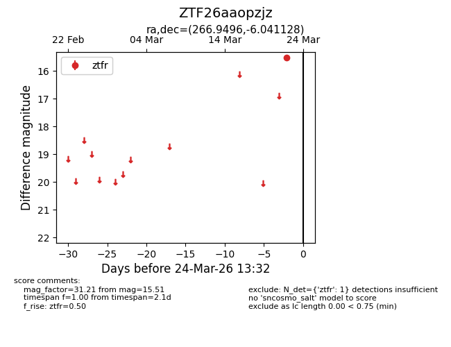
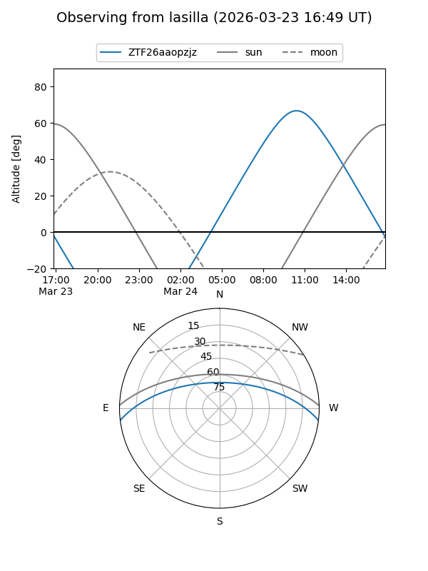
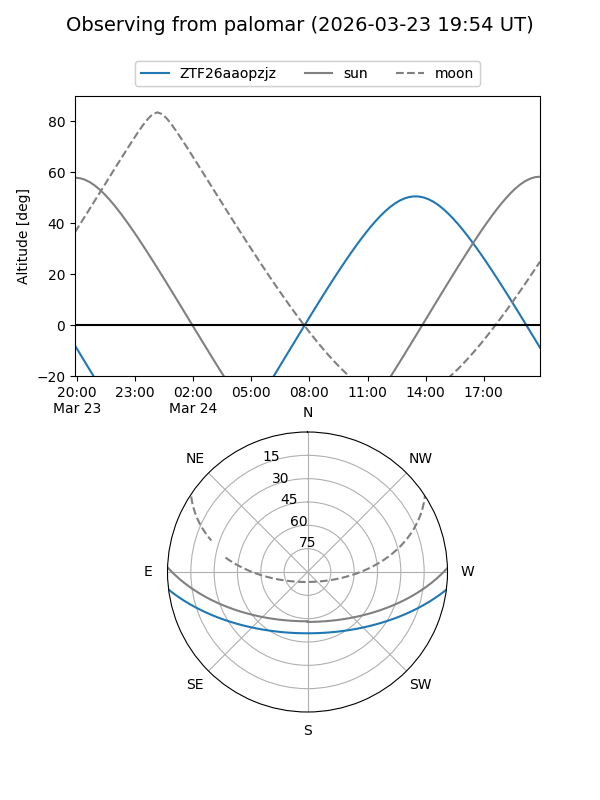

ZTF26aaopzjz
Target ZTF26aaopzjz at 2026-03-24 13:35
Aliases and brokers:
FINK: link
Lasair: link
ALeRCE: link
alt names
ZTF26aaopzjz (ztf,fink_ztf)
Coordinates:
equatorial (ra, dec) = 266.9496,-6.04113
equatorial (HMS+DMS) = 17:47:47.90,-06:02:28.06
galactic (l, b) = (20.0927,+11.22280)
Flags:
Photometry:
last ztfr=15.51
1 ztfr detections
Lightcurve

Visibility


Additional plots